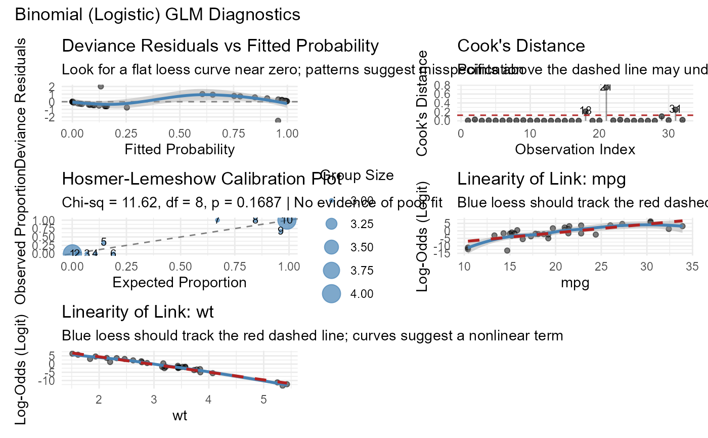
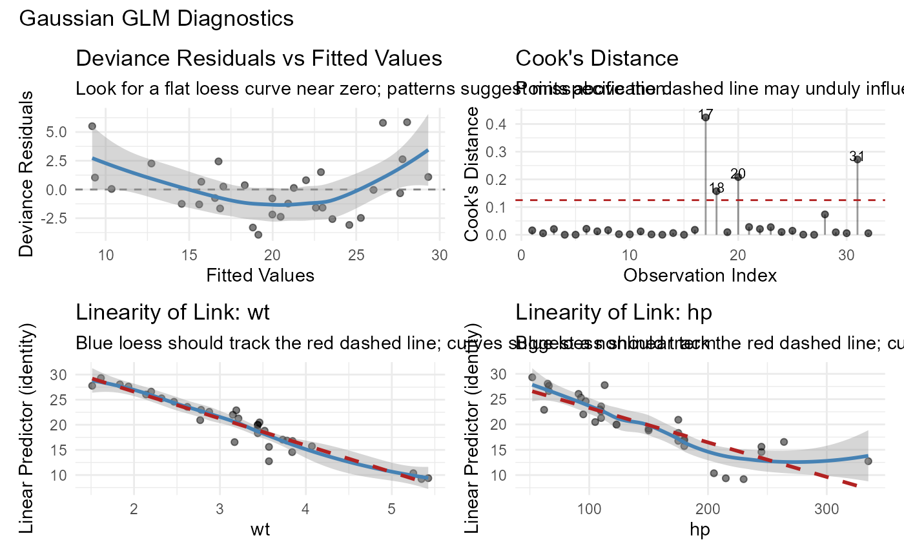

Produces a panel of diagnostic plots for assessing the assumptions of a generalized linear model. Automatically detects the model family and selects appropriate diagnostics.
Usage
diagnose_glm(model, guide = getOption("glmassume.guide", TRUE))Value
A combined plot (requires the patchwork package for layout).
If patchwork is not installed, returns a list of individual ggplot
objects.
Details
The diagnostics selected depend on the model family:
All families receive residual and Cook's distance plots.
Binomial: adds Hosmer-Lemeshow calibration plot and linearity-of-link.
Poisson / Negative Binomial: adds rootogram and zero-inflation diagnostic.
Gamma / Inverse Gaussian / Gaussian: adds linearity-of-link plots.
Examples
m <- glm(am ~ mpg + wt, data = mtcars, family = binomial)
diagnose_glm(m)
#> `geom_smooth()` using formula = 'y ~ x'
#> `geom_smooth()` using formula = 'y ~ x'
#> `geom_smooth()` using formula = 'y ~ x'
#> `geom_smooth()` using formula = 'y ~ x'
#> `geom_smooth()` using formula = 'y ~ x'

m2 <- glm(mpg ~ wt + hp, data = mtcars, family = gaussian)
diagnose_glm(m2)
#> `geom_smooth()` using formula = 'y ~ x'
#> `geom_smooth()` using formula = 'y ~ x'
#> `geom_smooth()` using formula = 'y ~ x'
#> `geom_smooth()` using formula = 'y ~ x'
#> `geom_smooth()` using formula = 'y ~ x'
